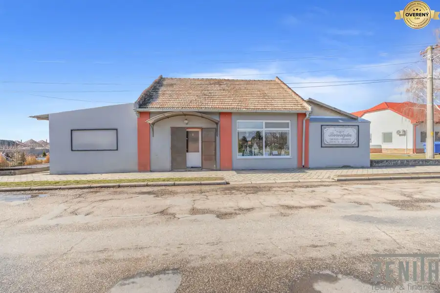
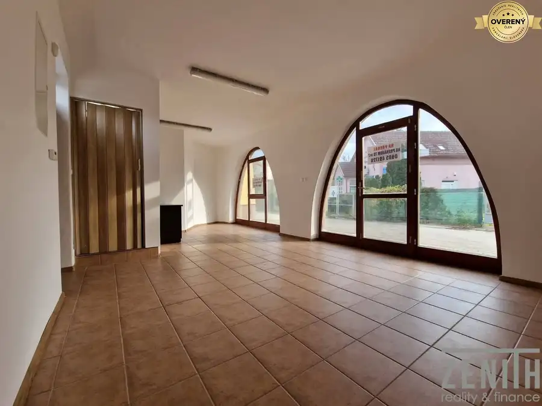
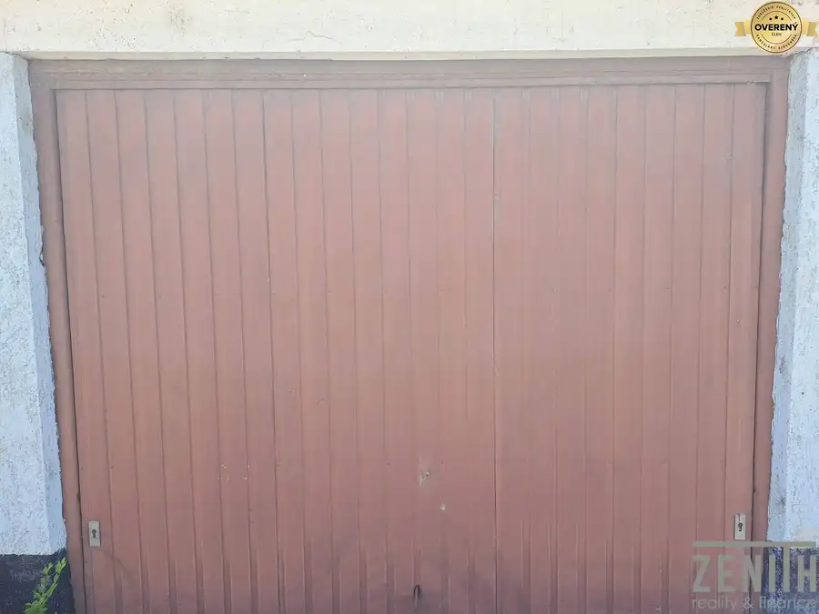
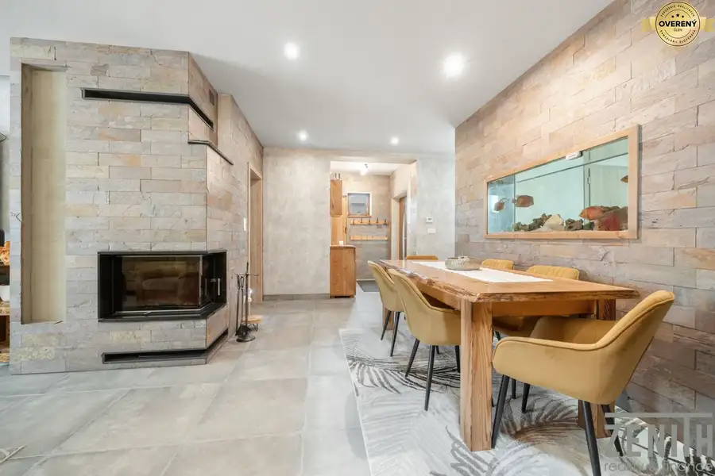
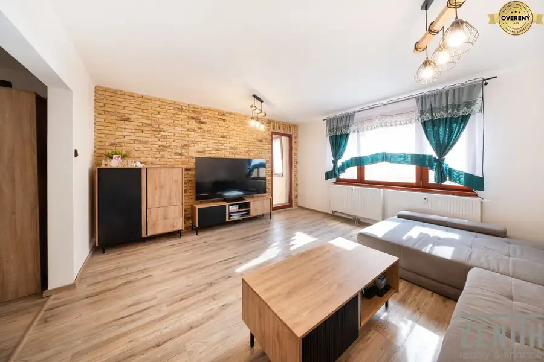

Aktuálna ponuka
11 nehnuteľností, predovšetkým byty, rodinné domy, pozemky. Každá má vlastnú stránku s fotkami, popisom a mapou.
Prezrieť ponuku
AttilA LelkešRealitný maklér
Realitný maklér · Zenith Reality s.r.o.
Predaj a prenájom nehnuteľností · Dunajská Streda, Veľký Meder, Horná Potôň

 Rodinné domy10
224 000 €Váš vysnívaný domov so záhradou – 4-izbová novostavba
Horná Potôň
4-izbový102 m²
Ponúkame na predaj novostavbu 4-izbového rodinného domu obci Horná Potôň v uzatvorenom areáli v blízkosti Šamorína, predávanú v stave holodom s…
Rodinné domy10
199 000 €Rodinný dom s 2 bytovými jednotkami – Kútniky časť Blažov
Kútniky
6-izbový164 m²
Ponúkame na predaj priestranný rodinný dom s dvomi samostatnými bytovými jednotkami v pokojnej obytnej lokalite obce Kútniky – časť Blažov, iba 3 km…
Nebytové priestory10
350 000 €EXKLUZÍVNE NA PREDAJ – Obchodný priestor v centre Dunajskej Stredy
Dunajská Streda
258 m²
Ponúkame na predaj priestranný obchodný priestor, nachádzajúci sa vo výnimočnej lokalite priamo v centre mesta na **Námestí Ármina Vámbéryho**.…
Rodinné domy10
224 000 €Váš vysnívaný domov so záhradou – 4-izbová novostavba
Horná Potôň
4-izbový102 m²
Ponúkame na predaj novostavbu 4-izbového rodinného domu obci Horná Potôň v uzatvorenom areáli v blízkosti Šamorína, predávanú v stave holodom s…
Rodinné domy10
199 000 €Rodinný dom s 2 bytovými jednotkami – Kútniky časť Blažov
Kútniky
6-izbový164 m²
Ponúkame na predaj priestranný rodinný dom s dvomi samostatnými bytovými jednotkami v pokojnej obytnej lokalite obce Kútniky – časť Blažov, iba 3 km…
Nebytové priestory10
350 000 €EXKLUZÍVNE NA PREDAJ – Obchodný priestor v centre Dunajskej Stredy
Dunajská Streda
258 m²
Ponúkame na predaj priestranný obchodný priestor, nachádzajúci sa vo výnimočnej lokalite priamo v centre mesta na **Námestí Ármina Vámbéryho**.…

Nebytové priestory8 98 000 €Akcia!! Komerčný objekt s pozemkom – možnosť zmeny na rodinný dom Okoč 110 m² Ponúkame na predaj budovu aktuálne využívanú ako obchodný priestor, situovanú vo výbornej lokalite len cca 300 m od centra obce, v blízkosti…
Nebytové priestory9 118 000 €Výnimočný investičný priestor v centre Dunajskej Stredy Dunajská Streda 78.7 m² Ponúkame na predaj jedinečný multifunkčný priestor s celkovou výmerou 78,74 m², situovaný na začiatku pešej zóny v centre Dunajskej Stredy. Vďaka… Pozemok7
20 000 €Na predaj – lesný pozemok priamo na brehu Malého Dunaja
Trstice
1300 m²
Hľadáte miesto pre oddych v prírode, rybárčenie alebo investíciu do jedinečných pozemkov pri vode? Ponúkame Vám exkluzívne na predaj lesné pozemky o…
Pozemok7
20 000 €Na predaj – lesný pozemok priamo na brehu Malého Dunaja
Trstice
1300 m²
Hľadáte miesto pre oddych v prírode, rybárčenie alebo investíciu do jedinečných pozemkov pri vode? Ponúkame Vám exkluzívne na predaj lesné pozemky o…

Ostatné5 19 000 €Garáž na predaj v centre Dunajskej Stredy Dunajská Streda 18 m² Dunajská Streda – centrum mesta Len približne 200 metrov od železničnej stanice. Prečo si vybrať práve túto garáž? ✅ Suchá a udržiavaná garáž v…
Rodinné domy10 590 000 €Dom s vlastným rezortom? 10 apartmánov, bazén a 1 448 m² pozemok Veľký Meder 5-izbový140 m² Ponúkame na predaj priestranný rodinný dom s rozsiahlym pozemkom a rozostavaným apartmánovým komplexom s 10 apartmánmi v atraktívnej časti Veľký…
Byt10 119 000 €Moderný byt po rekonštrukcii len pár minút od centra Veľký Meder 3-izbový60 m²2. podlažie Ponúkame na predaj príjemný byt po kompletnej rekonštrukcii v roku 2025, nachádzajúci sa vo vyhľadávanej lokalite sídlisko Mateja Corvina vo Veľkom…Tomuto výberu zatiaľ nezodpovedá žiadna ponuka. Napíšte mi, čo hľadáte.
Volám sa AttilA Lelkeš. Som realitný maklér kancelárie Zenith Reality s.r.o. a pôsobím predovšetkým v lokalitách Dunajská Streda, Veľký Meder, Horná Potôň a Kútniky (Trnavský kraj).
11 nehnuteľností, predovšetkým byty, rodinné domy, pozemky. Každá má vlastnú stránku s fotkami, popisom a mapou.
Prezrieť ponukuDunajská Streda, Veľký Meder, Horná Potôň, Kútniky, Okoč a okolie. Ponuku si môžete prezrieť podľa lokality.
Nehnuteľnosti v lokaliteOdhad trhovej ceny, príprava prezentácie, obhliadky, zmluvy a odovzdanie nehnuteľnosti.
Dohodnúť stretnutieNa čo sa pýtate najčastejšie, skôr než sa stretneme.
Odhad trhovej ceny vychádza z aktuálnych ponúk a predajov v lokalite, nie z cenníkových tabuliek. Podmienky Vám poviem pri prvom telefonáte.
Najprv obhliadka a odhad ceny, potom príprava prezentácie (fotografie, popis, inzercia), obhliadky so záujemcami, rezervačná zmluva, kúpna zmluva, návrh na vklad do katastra a odovzdanie nehnuteľnosti. O každom kroku viete vopred.
Najrýchlejšie cez WhatsApp alebo telefón. Termín stretnutia alebo obhliadky dohodneme podľa Vás.